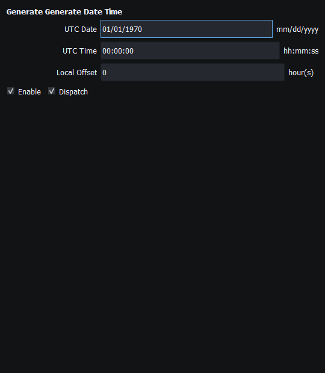

Figure 35. Engine generator main controls and local start state. No external engine is controlled. Click to enlarge.
Generate builds supported outgoing messages from current instrument properties. A generator is an optional way to supply changing values; it is not the encoder and is not required for a manually configured instrument.
The encoder uses the current model, not the number of decimal places visible on the widget. A zero value is not automatically unavailable. Some messages expose structured lists or only a bounded subset of their protocol fields; consult the instrument-specific editor and coverage reference.
Add a compatible source in Generate: Vessel Movement, Engine/Outboard, Transmission/Lower Unit, Weather or Date Time. Compatible bindings are established in either creation order. Use the source's Enable and Dispatch controls to separate local operation from delivery to instruments. Inspect instance routing and supported signal/property mappings instead of assuming every generator property feeds every message.
A clock source can update date/time instruments; movement can update supported navigation fields. APB and RMB fields are editable manually; automatic Vessel Movement bindings for those sentences are not available. Manual property-driven TX remains useful without those automatic mappings.
Check an independent receiver to confirm delivery. Application logs show outgoing submissions and connection errors. Signal K publication uses its own measurement mappings rather than raw NMEA2000 CAN messages.

Figure 34. The clock generator can supply compatible date/time instruments without authorizing external Sending. Click to enlarge.
Figure 35. Engine generator main controls and local start state. No external engine is controlled. Click to enlarge.
Enable, Dispatch and Sending · Manual Vessel Movement · Autopilot and Route Following · Game Controller Mode · Engine and Transmission Simulation · Weather and Environmental Simulation · AIS Simulation · Windlass Simulation · Connection Troubleshooting · Route Overview · Engineering Units